대결
먼저 고르고, 데이터로 확인해요
엉뚱하지만 궁금한 대결을 공개 데이터로 재 봤어요. 하나 골라서 투표하면 데이터 결과가 열려요.
찾는 대결이 없어요. 다른 말로 찾아보세요.
쇼츠 인사이트 대결이 아니라 읽는 글이에요
쇼츠 인사이트10년 전 1만 원 장바구니, 지금은 얼마일까요
장바구니에 담는 먹거리 값이 전체 물가보다 두 배 가까이 빨리 올랐어요.
읽으러 가기
쇼츠 인사이트혼자 사는 비율, 20대 후반과 85세 이상이 거의 같아요
혼자 사는 집이라고 하면 어르신 집이 먼저 떠오르기 쉬워요. 비율로 재 보면 20대 후반도 같은 높이에 있어요.
읽으러 가기
이병 월급 vs 알바 한 달
이병 월급이 알바 한 달의 몇 %인지, 2017년보다 2026년에 2배 넘게 커졌을까?
A2배 넘게 커졌다vsB2배는 안 된다
투표하러 가기
새 대결하루 시간투표했어요결과: 개인 운동걷기 vs 운동
걷기·산책 vs 개인 운동, 하루에 한 사람이 더 많은 쪽은?
A걷기·산책vsB개인 운동
투표하러 가기
새 대결하루 시간투표했어요TV 승TV vs 영상
TV vs 영상, 하루에 본 사람이 더 많은 쪽은?
ATV(실시간 방송)vsB영상(다시보기·동영상)
투표하러 가기
대결설문투표했어요믿을 수 있다 승우리 사회, 믿을 수 있다 vs 없다
우리 사회, '믿을 수 있다' vs '믿을 수 없다' 더 많은 쪽은?
A믿을 수 있다vsB믿을 수 없다
투표하러 가기
대결하루 시간투표했어요반려동물 승반려동물 vs 식물
반려동물 돌보기 vs 식물 돌보기, 하루에 한 사람이 더 많은 쪽은?
A반려동물 돌보기vsB식물 돌보기
투표하러 가기
대결하루 시간투표했어요책 승책 vs 모바일 게임
책 읽기 vs 모바일 게임, 하루에 한 사람이 더 많은 쪽은?
A책 읽기vsB모바일 게임
투표하러 가기
대결하루 시간투표했어요신문 승신문 vs SNS
신문 보기 vs SNS 교제, 하루에 한 사람이 더 많은 쪽은?
A신문 보기vsBSNS 교제
투표하러 가기
대결설문투표했어요없다 승기부할 생각, 있다 vs 없다
앞으로 기부할 생각, '있다' vs '없다' 더 많은 쪽은?
A있다vsB없다
투표하러 가기
대결설문투표했어요근로시간 승월급 vs 근로시간
직장에서 임금 만족 vs 근로시간 만족, 만족한다는 사람이 더 많은 쪽은?
A임금vsB근로시간
투표하러 가기
대결물가투표했어요무승부삼겹살 vs 돼지갈비
삼겹살 vs 돼지갈비(식당), 값이 더 많이 오른 쪽은?
A삼겹살vsB돼지갈비
투표하러 가기
대결물가투표했어요된장찌개 승김치찌개 vs 된장찌개
김치찌개 vs 된장찌개 백반, 값이 더 많이 오른 쪽은?
A김치찌개vsB된장찌개
투표하러 가기
대결물가투표했어요미용실 승이발 vs 미용실
이발 vs 미용실, 값이 더 많이 오른 쪽은?
A이발vsB미용실
투표하러 가기
대결설문투표했어요쉬기 승주말에 게임 vs 쉬기
주말에 게임·인터넷 vs 쉬기, 더 많은 사람이 고른 쪽은?
A게임·인터넷vsB쉬기
투표하러 가기
대결설문투표했어요안정성 승직업, 적성 vs 안정성
직업 고를 때 적성 vs 안정성, 더 많은 사람이 고른 쪽은?
A적성·흥미vsB안정성
투표하러 가기
대결하루 시간투표했어요매장 승매장 vs 온라인 쇼핑
매장 쇼핑 vs 온라인 쇼핑, 하루 시간일지에 적은 사람이 더 많은 쪽은?
A매장 쇼핑vsB온라인 쇼핑
투표하러 가기
대결설문투표했어요가족이 승부모 부양, 부모 스스로 vs 가족이
부모 부양, '부모 스스로' vs '가족이', 더 많은 사람이 고른 쪽은?
A부모 스스로vsB가족이
투표하러 가기
대결설문투표했어요다 함께 승부모 부양, 가족이 vs 다 함께
부모 부양, '가족이' vs '가족·정부·사회가 다 함께', 더 많은 사람이 고른 쪽은?
A가족이vsB다 함께
투표하러 가기
대결물가투표했어요짬뽕 승짜장면 vs 짬뽕
짜장면 vs 짬뽕, 값이 더 많이 오른 쪽은?
A짜장면vsB짬뽕
투표하러 가기
대결설문투표했어요결과: 국내 여행지난 1년 국내 vs 해외 여행
지난 1년 국내 여행 vs 해외여행, 다녀온 사람이 더 많은 쪽은?
A국내 여행vsB해외여행
투표하러 가기
대결물가투표했어요무승부아이스크림 vs 과자
아이스크림 vs 과자, 값이 더 많이 오른 쪽은?
A아이스크림vsB과자
투표하러 가기
대결설문투표했어요결과: 수입(돈)직업 고를 때 돈 vs 안정
직업 고를 때 수입(돈) vs 안정성, 더 많은 사람이 고른 쪽은?
A수입(돈)vsB안정성
투표하러 가기
대결설문투표했어요당일치기 승국내 여행, 1박 vs 당일치기
국내 여행, 1박 이상 vs 당일치기, 한 해에 더 자주 다녀온 쪽은?
A1박 이상vsB당일치기
투표하러 가기
대결물가투표했어요두유 승우유 vs 두유
우유 vs 두유, 값이 더 많이 오른 쪽은?
A우유vsB두유
투표하러 가기
대결설문투표했어요무승부주말에 여행 vs 취미
주말에 여행 vs 취미, 더 많은 사람이 한 쪽은?
A여행vsB취미
투표하러 가기
대결물가투표했어요우편 승택배 vs 우편
택배 vs 우편, 요금이 더 많이 오른 쪽은?
A택배vsB우편
투표하러 가기
대결설문투표했어요결과: 영상 보기주말에 영상 vs 쉬기
주말에 영상 보기 vs 쉬기, 더 많은 사람이 한 쪽은?
A영상 보기vsB쉬기
투표하러 가기
대결물가투표했어요탄산음료 승생수 vs 탄산음료
생수 vs 탄산음료, 값이 더 많이 오른 쪽은?
A생수vsB탄산음료
투표하러 가기
대결물가투표했어요귤 승사과 vs 귤
사과 vs 귤, 값이 더 많이 오른 쪽은?
A사과vsB귤
투표하러 가기
대결물가투표했어요무승부냉면 vs 칼국수
냉면 vs 칼국수, 값이 더 많이 오른 쪽은?
A냉면vsB칼국수
투표하러 가기
대결물가투표했어요해외 승비행기, 국내 vs 해외
국내 vs 해외 비행기, 항공료가 더 많이 오른 쪽은?
A국내vsB해외
투표하러 가기
대결물가투표했어요노래방 승노래방 vs PC방
노래방 vs PC방, 이용료가 더 많이 오른 쪽은?
A노래방vsBPC방
투표하러 가기
대결물가투표했어요호텔 승호텔 vs 모텔
호텔 vs 모텔, 숙박비가 더 많이 오른 쪽은?
A호텔vsB모텔
투표하러 가기
대결설문투표했어요일 승일 vs 가정
일 먼저 vs 가정 먼저, 더 많은 사람이 고른 쪽은?
A일 먼저vsB가정 먼저
투표하러 가기
대결설문투표했어요해도 그만 승결혼, 해야 한다 vs 해도 그만
결혼, '해야 한다' vs '해도 좋고 안 해도 좋다', 더 많은 사람이 고른 쪽은?
A해야 한다vsB해도 그만
투표하러 가기
대결물가투표했어요결과: 집 커피커피값, 집 vs 카페
커피값, 집 커피와 카페 커피 중 더 많이 오른 쪽은?
A집 커피vsB카페 커피
투표하러 가기
대결물가투표했어요영화관 승영화관 vs 집
영화관 vs 집에서 보기(온라인 콘텐츠), 값이 더 많이 오른 쪽은?
A영화관vsB집에서 보기
투표하러 가기
대결물가투표했어요햄버거 승햄버거 vs 피자
햄버거 vs 피자, 값이 더 많이 오른 쪽은?
A햄버거vsB피자
투표하러 가기
대결물가투표했어요목욕탕 승목욕탕 vs 찜질방
목욕탕 vs 찜질방, 값이 더 많이 오른 쪽은?
A목욕탕vsB찜질방
투표하러 가기
대결물가투표했어요택시 승택시 vs 시내버스
택시 vs 시내버스, 요금이 더 많이 오른 쪽은?
A택시vsB시내버스
투표하러 가기
대결물가투표했어요식당 라면 승사서 끓인 라면 vs 식당 라면
같은 라면, 사서 끓인 것과 식당 라면 중 값이 더 오른 쪽은?
A사서 끓인 라면vsB식당 라면
투표하러 가기
대결물가투표했어요김밥 승김밥 vs 떡볶이
김밥 vs 떡볶이, 값이 더 많이 오른 쪽은?
A김밥vsB떡볶이
투표하러 가기
대결실험맨투표했어요결과: 못 넘는다사 온 커피값, 밥값의 5% 넘을까
실험맨, 사 온 커피값이 밖에서 먹는 밥값의 5%를 넘을까?
A넘는다vsB못 넘는다
투표하러 가기

판다 vs 실험맨
판다 vs 실험맨, 다섯 판 승부로 하루에 '더 많이 먹는' 쪽은?
A판다vsB실험맨
투표하러 가기

1년 밥값 vs 최신 스마트폰
실험맨이 1년 동안 사 먹는 밥값(배달 포함)으로 최신 스마트폰을 살 수 있을까?
A산다vsB못 산다
투표하러 가기

20대 vs 우리 할아버지
20대 여성 실험맨 vs 65세 이상 남성 실험맨, 네 판 승부로 하루 운동을 더 많이 하는 쪽은?
A20대 여성vsB65세 이상 남성
투표하러 가기

짜장면 vs 치킨
짜장면 vs 치킨, 다섯 판 승부로 값이 더 많이 오른 국민 음식은?
A짜장면vsB치킨
투표하러 가기

출퇴근 vs 연차
실험맨이 1년 동안 출퇴근에 쓰는 시간과 연차 휴가로 쉬는 시간, 세 판 승부로 더 긴 쪽은?
A출퇴근vsB연차 휴가
투표하러 가기

경복궁 vs 에버랜드
경복궁 vs 에버랜드, 다섯 판 승부로 1년에 사람이 더 많이 찾는 곳은?
A경복궁vsB에버랜드
투표하러 가기

마라톤 세계기록 vs 서울 버스
마라톤 세계기록 속도로 뛰는 사람 vs 서울 시내버스, 세 판 승부로 더 빠른 쪽은?
A세계기록 사람vsB서울 버스
투표하러 가기

1년 쓰는 물 vs 레인 한 줄
실험맨 혼자 1년 쓴 수돗물로 25m 수영장 레인 한 줄을 채울 수 있을까?
A채운다vsB못 채운다
투표하러 가기

실험맨 vs 고양이 그루밍
실험맨 vs 고양이, 세 판 승부로 하루 씻고 꾸미는 시간이 더 긴 쪽은 누굴까?
A실험맨vsB고양이
투표하러 가기

고3 vs 기린
고3 실험맨과 기린, 하루에 누가 더 적게 잘까?
A고3vsB기린
투표하러 가기

60세 이상 vs 20대
60세 이상 여성 실험맨과 20대 여성 실험맨, 하루 사람을 만나 어울리는 시간은 누가 더 길까?
A60세 이상 여성vsB20대 여성
투표하러 가기
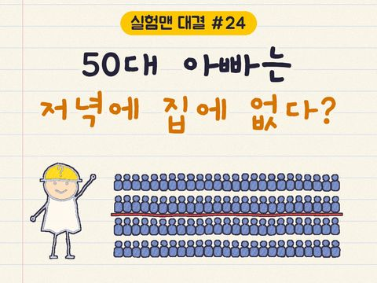
50대 아빠, 저녁에 집에 없다?
50대 남성 실험맨, 저녁을 대체로 가족과 함께 먹는 사람이 100명 중 절반을 넘을까?
A절반 넘는다vsB절반 못 넘는다
투표하러 가기
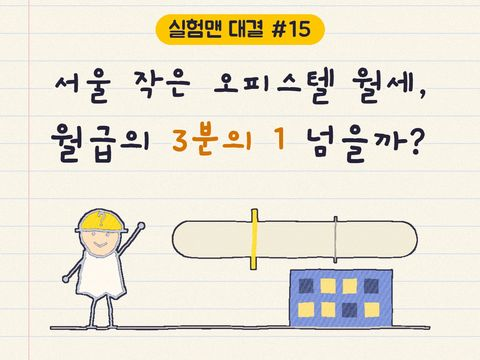
서울 월세 vs 월급 3분의 1
서울에 혼자 사는 20대 여성 실험맨, 작은 오피스텔 월세가 월급의 3분의 1을 넘을까?
A3분의 1 못 넘는다vsB3분의 1 넘는다
투표하러 가기
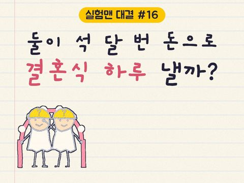
실험맨 vs 결혼식
30대 신혼부부 실험맨, 둘이 석 달 번 돈으로 결혼식 하루 비용을 낼 수 있을까?
A석 달이면 낸다vsB석 달로는 모자란다
투표하러 가기
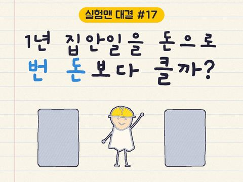
1년 집안일 vs 번 돈
30대 여성 실험맨의 1년 집안일, 돈으로 바꾸면 1년 번 돈보다 클까?
A집안일 값이 더 크다vsB번 돈이 더 크다
투표하러 가기
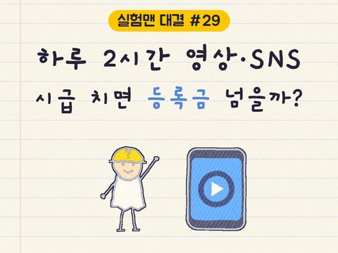
영상·SNS 시간 vs 등록금
20대 여성 실험맨이 1년 동안 영상·SNS 보는 시간, 최저시급으로 치면 대학 1년 등록금을 넘을까?
A넘는다vsB못 넘는다
투표하러 가기
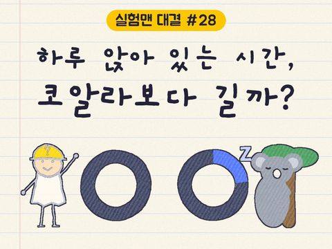
실험맨 vs 코알라
잠·평일·주말 세 판 승부, 실험맨과 코알라 중 누가 이길까?
A실험맨vsB코알라
투표하러 가기
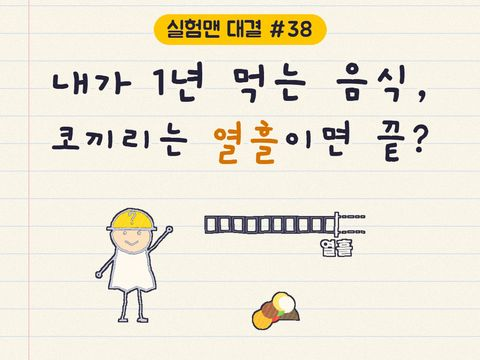
실험맨 vs 코끼리
실험맨(평균 한국인)이 1년 동안 먹는 음식, 코끼리는 열흘 안에 다 먹을까?
A열흘 안에 다 먹는다vsB열흘로는 모자란다
투표하러 가기
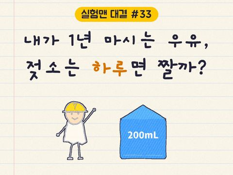
실험맨 vs 젖소
평균 한국인이 1년 동안 마시는 우유, 젖소 한 마리는 하루면 짤 수 있을까?
A하루면 짠다vsB하루로는 모자란다
투표하러 가기

1년 쓰레기 vs 내 몸무게
실험맨(평균 한국인)이 1년 동안 버리는 생활 쓰레기, 자기 몸무게의 5배를 넘을까?
A5배 못 넘는다vsB5배 넘는다
투표하러 가기

실험맨 vs 집고양이
실험맨(평균 한국인)이 집고양이와 50m 달리기를 하면 누가 이길까?
A실험맨vsB집고양이
투표하러 가기

123층 계단, 1시간 안에?
실험맨(평균 한국인)은 롯데월드타워 123층 계단을 1시간 안에 오를 수 있을까?
A1시간 안에 오른다vsB1시간 넘게 걸린다
투표하러 가기
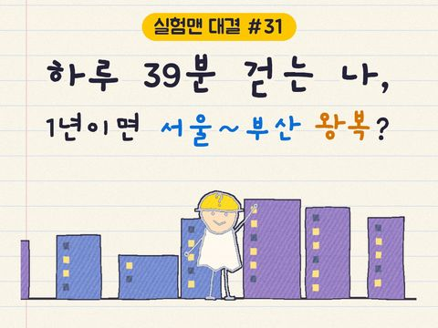
실험맨 vs 서울~부산
평균 한국인이 1년 동안 걷는 거리로 서울~부산을 왕복할 수 있을까?
A왕복 넘는다vsB못 미친다
투표하러 가기

평범한 65세 vs 제주 해녀
평균 한국인이 제주 해녀를 이기는 조건이 있을까?
A있다vsB없다
투표하러 가기

스마트폰 vs 밥
한국인은 스마트폰 보는 시간이 더 길까, 밥 먹는 시간이 더 길까?
A스마트폰vsB밥 먹기
투표하러 가기
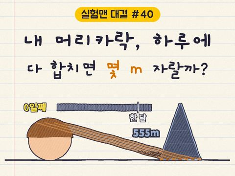
내 머리카락, 하루 몇 m?
머리카락 전부가 자라서 롯데월드타워 높이(555m)가 되는 데, 한 달이 넘게 걸릴까?
A한 달 넘게vsB한 달 안에
투표하러 가기
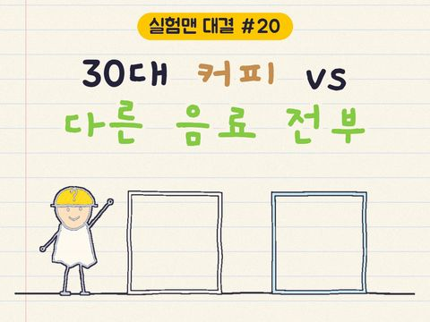
커피 vs 다른 음료
30대에게 커피는 다른 음료를 다 합친 것보다 많을까?
A많다vsB적다
투표하러 가기

두 쌍 중 한 쌍 이혼?
우리나라에서 하루에 결혼하는 커플은 이혼하는 커플의 몇 배일까?
A2배 넘게vsB2배 이하
투표하러 가기
대결투표했어요로또 승로또 vs 벼락
한국에서 로또 1등 되기 vs 벼락 맞기, 뭐가 더 흔할까?
A로또 1등vsB벼락 맞기
투표하러 가기

강아지 vs 고양이
한국에서 키우는 개가 많을까 고양이가 많을까?
A개vsB고양이
투표하러 가기
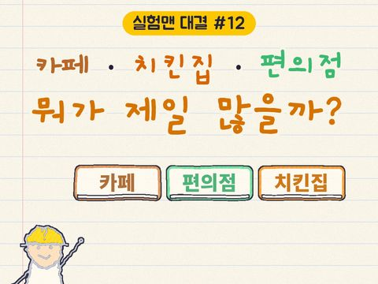
카페·치킨집·편의점
한국에 카페가 많을까 치킨집이 많을까?
A카페vsB치킨집
투표하러 가기
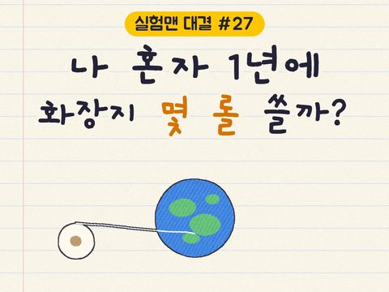
1년에 화장지 몇 롤?
한국인이 1년에 쓰는 화장지를 이으면 지구 몇 바퀴일까?
A1,000바퀴 이하vsB1,000바퀴 넘게
투표하러 가기
대결투표했어요바퀴 승문 vs 바퀴
우리나라에는 문이 더 많을까, 바퀴가 더 많을까?
A문vsB바퀴
투표하러 가기
대결동물투표했어요결과: 3명이면 충분고릴라 vs 남자들
수컷 고릴라 1마리를 몸집과 에너지 모두에서 넘으려면, 한국 남자 3명이면 충분할까?
A3명이면 충분vsB3명으론 부족
투표하러 가기
대결물가투표했어요무승부치킨 vs 중형차
한국인이 평생 먹는 치킨 값이면, 중형차를 살 수 있을까?
A살 수 있다vsB못 산다
투표하러 가기
대결동물투표했어요호랑이 승사자 vs 호랑이
사자 vs 호랑이, 싸움 말고 능력으로 겨루면 누가 이길까?
A사자vsB호랑이
투표하러 가기
대결투표했어요무승부KTX vs 비행기
서울 집 앞에서 부산 집 앞까지, KTX와 비행기 중 뭐가 더 빠를까?
AKTXvsB비행기
투표하러 가기
대결투표했어요계단 승엘리베이터 vs 계단
아파트 5층에 살면, 엘리베이터와 계단 중 뭐가 더 빠를까?
A엘리베이터vsB계단
투표하러 가기
대결동물투표했어요사람 승개미 vs 사람
지구의 개미 전부 vs 사람 전부, 어느 쪽이 더 무거울까?
A개미 전부vsB사람 전부
투표하러 가기
대결투표했어요무승부할머니 30명 vs 타이슨
죽음을 각오한 할머니 30명 vs 감기 걸린 타이슨, 누가 이길까?
A할머니 30명vsB감기 걸린 타이슨
투표하러 가기

볼트 vs 치타
100m 달리기, 볼트가 50m 앞에서 출발하면?
A볼트가 이긴다vsB치타가 이긴다
투표하러 가기
대결투표했어요결과: 뛴다빗속 뛰기 vs 걷기
비 올 때 우산 없이 100m, 뛸까 걸을까?
A뛴다vsB걷는다
투표하러 가기
대결투표했어요타이슨 vs 오타니
타이슨 vs 방망이 든 오타니, 둘 다 최선이면 오타니 승
읽으러 가기
대결투표했어요잭슨 vs 호날두
잭슨 vs 호날두, 4판 2승 2패로 비겼어요
읽으러 가기